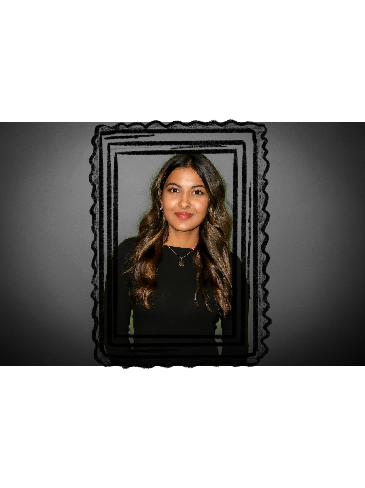

Hey, I'm Niki, and thanks for stopping by!
I have been creating since I was 7, but after 18 years of dancing, I learned to see the world in motion—how rhythm, energy, and stories connect in unexpected ways. I draw inspiration from all sorts of things: the beats of music, the fascinating worlds in shows, and the wild creativity of generative art and coding. My work is all about experimenting, pushing boundaries, and letting ideas collide in ways you might not expect. Hope you enjoy what you see—oh, and PS: We can totally be friends if you can guess who my second art collection is all about.
- Digital Artist
- Painter
- Generative Creator
- Designer